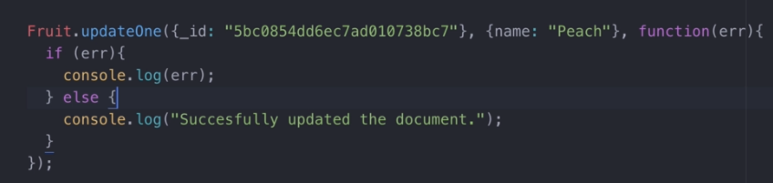

Update Method
To update a certain object in the database. the syntax to use in mongoose is Model.updateOne() or updateMany()

This accepts 3 parameters, first is the filter, in the example above, we selected the specific id of the object to be modified, second parameter is the value to be added or modify. Last but not the least is the callback function which checks if an error occurs or not.
Delete Method

We use deleteOne or deleteMany in this situation where first parameter is a filter or selector, second parameter is optional querym and third is a callback function.
Delete Many

This is the general syntax, where Person is the model, inside the first parameter is the limiter and we could also pass additional parameter inside by separating it with comma then stating a mongoDB query,

That's all.